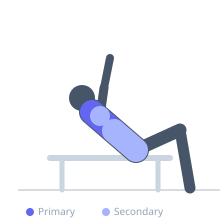
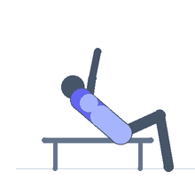

Exercise guide / Prone Incline Cobra Y-Raise
Prone Incline Cobra Y-Raise
The prone incline cobra Y-raise combines a thoracic extension (cobra) with an overhead Y-arm position, training the lower trapezius and serratus anterior in the overhead range while also loading the thoracic extensors. The Y-arm position (arms raised diagonally overhead at 45 degrees from the spine) targets the lower trapezius more specifically than T or W positions, as the lower trap is primarily responsible for upward scapular rotation and depression when the arms are elevated.
Primary muscles
trapezius lower
Secondary muscles
erector spinae
deltoid anterior
Equipment
Dumbbell (Fixed)
Optional
Standard Barbell


Starting position
- Lie prone on an incline bench (15-30 degrees). Arms hang in front. Thumbs pointing up.
Setup
- No load or very light dumbbells (1-3 kg). Focus is on motor control, not strength.
Steps
- Step 1: Begin hanging, thumbs up.
- Step 2: Extend the thoracic spine (cobra movement) simultaneously while raising the arms in a Y shape — 45 degrees from the spine.
- Step 3: At the top, the arms form a Y overhead, thumbs pointing upward.
- Step 4: Hold 2 seconds.
- Step 5: Lower both the arms and the thoracic extension simultaneously.
Coaching cues
- Thumbs point to the ceiling at the top
- Y shape — not T, not overhead — 45 degrees
- Lead with the chest for the thoracic extension
Breathing
- Exhale on the raise. Inhale lowering.
Range of motion
- Full hang to Y position with thoracic extension.
Tempo
- 2-2-2-0
Common mistakes
- Arms going too wide (T position) or too narrow — the Y angle is 45 degrees
- Extending from the lumbar spine — the thoracic spine is what should move
Safety
- Bodyweight or very light load only — this is a postural exercise
- No pain should occur during this exercise — stop if any shoulder discomfort arises
Training
- rehabilitation: 10–20 reps
- rehabilitation: 2–3 sets
- Rest: {'rehabilitation': 60}